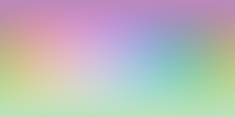
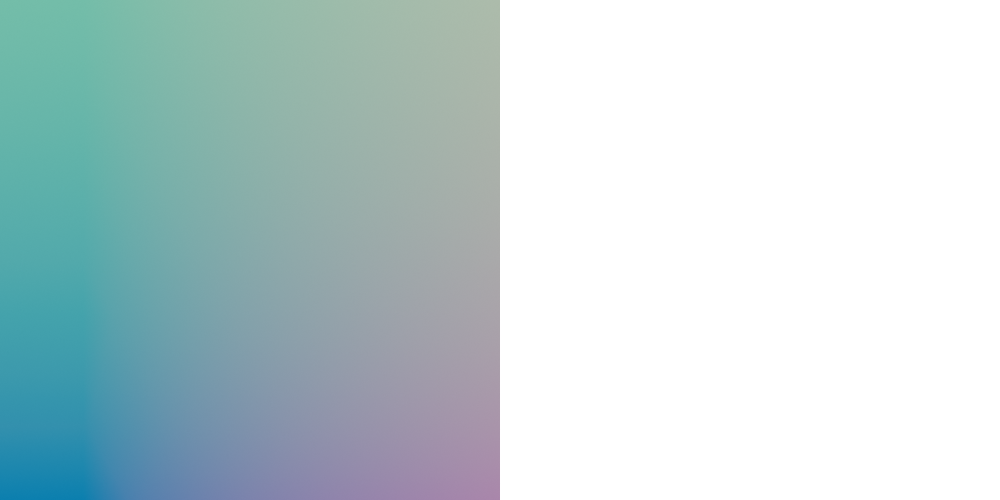
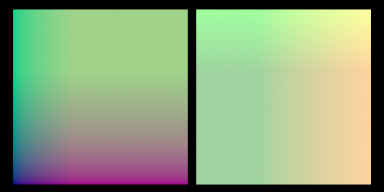

English · 한국어
Importing a Cycles scene
2.11.13 compatibility corrections
Bump finite differences no longer use ray-intersection epsilon as their minimum step. Bump Strength blends the original and perturbed unit normals on CPU and GPU. Camera volume detection searches past opaque foreground surfaces. Reference-object coordinates and Camera/Window coordinates for perspective and orthographic cameras are now transformed explicitly. Linked Bump Normal/Distance, panoramic Window coordinates and moving coordinate spaces remain outside this validation.
The 1280×720 sand comparison measured Cycles-relative mean brightness of 0.985 near and 0.936 mid-frame. Twelve bump-composition and eight analytic Beer–Lambert conditions passed on CPU and Metal. These scoped results do not establish 99% compatibility across all Cycles features.
One-click settings
Open a .blend authored for Cycles, switch Render Engine to SuperLuxCore, then click Import Cycles Settings in Render Properties. The operator copies:
| Cycles | SuperLuxCore |
|---|---|
samples | halt.samples (hard cap; the
noise-level stop still ends early on easy scenes) |
max_bounces | path.depth_total |
diffuse_bounces | path.depth_diffuse |
glossy_bounces | path.depth_glossy |
transparent_bounces | path.depth_specular |
transmission_bounces | path.depth_specular
(min of the two) |
film_transparent | first image-pipeline
transparent_film |
use_denoising | denoiser.enabled |
view-layer samples | per-layer halt override |
Procedural snapping and coordinates
Math and Vector Math Snap use Blender's floored-increment rule,
not nearest rounding: Snap(1.75, 1) = 1 and
Snap(-1.25, 1) = -2. Vector increments work per component;
a zero increment produces zero in that component. Linked inputs and the
Math node's Clamp option are supported on CPU and GPU.
Texture Coordinate UV, Normal, Generated, Object and Reflection outputs are routed separately from Vector Math. Window and Camera outputs have explicit transforms in 2.11.13 for perspective and orthographic cameras; other camera modes report unsupported-coordinate warnings.
Generated uses Blender's authored whole-mesh texture space before
splitting geometry by material, including custom location/size, translation,
rotation, nonuniform scale and instances. Live rotation/translation edits,
scene archives and .lxm v5 proxies retain that space on CPU
and Metal. Flat axes return 0.5; coordinates are not clamped.
Undeformed ORCO for deforming modifiers is not exported as a vertex layer.
Legacy texture Vector mapping paths that approximate Generated by UV still
report a warning.

This actual public 2.11.9 bundle render in Blender 5.2.1 uses custom
texture-space location (1, -0.5, 0) and size (8, 4, 0).
The left and right faces have separate materials but share one coordinate
space. CPU and isolated Metal raw EXR comparisons against Cycles had
maximum absolute RGB errors 0.003421 and 0.007908;
the material boundary introduced no coordinate seam. The public 2.11.9
wheel passed all 328 export/SDL/CPU/Metal checks in factory-startup Blender.
Camera pixel-center alignment
Native engine 2.11.10 corrects a one-pixel vertical displacement
in orthographic and perspective CPU/GPU renders and CPU equirectangular
panoramas. Film samples are continuous coordinates: a pixel center is
(x + 0.5, y + 0.5), so reflecting Y uses
height - y, not the integer-index rule
height - y - 1. Reciprocal camera projections follow the same
convention; CPU panorama longitude reconstruction also avoids a meridian
precision loss.
No camera-shift workaround or Generated-coordinate remapping is needed. Upgrade the native wheel as well as the add-on and restart Blender. MNEE, vertex connection and other rendering defaults are not disabled by this correction.
Actual Blender 5.2.1 raw EXR checks cover centered and shifted orthographic/perspective cameras and a full 360° equirectangular panorama: 15 Cycles/CPU/isolated Metal renders passed against independent camera-frame and ray-direction references. The fixture rejects a 0.05-pixel per-row mean Y displacement and maximum RGB errors above 0.003. It does not certify depth of field, barrel distortion, partial panoramas or cross-vendor GPU parity.

This genuine 384×192 PNG was rendered by the public offline bundle
in a clean Blender profile. Its shader is
Geometry Incoming → Scale(0.25) → Add(0.5) → Emission
on the inside of a sphere. It is a display-managed diagnostic, not a
photorealistic scene. The bundle repeated all 15 raw EXR camera checks:
maximum RGB error 0.001358 and maximum per-row mean Y error
0.017232 pixels across Cycles/CPU/Metal. The independently
downloaded native wheel also passed these 15 checks and the 328-check
coordinate/math corpus.
Large-film RGBA and light-group integrity
Native engine 2.11.11 fixes parallel RGBA and radiance-group
extraction: each worker writes its own pixel offsets instead of advancing
a shared destination pointer. Transparent film keeps its weighted alpha;
opaque Combined output receives alpha 1.
On Apple Metal, the same release removes forced out-of-line calls for the small texture-reading loops. This corrected rare black texture-VM results in an actual 1024×512 emission render. The large VM dispatchers retain their compilation boundaries. No texture re-evaluation, radiance clamp, diagnostic shader write or rendering-algorithm disablement is part of the fix; the precise Apple compiler mechanism is not established.
The add-on also avoids a temporary all-ones alpha array and NumPy
concatenation when transferring opaque Combined pixels to Blender.
Simultaneous NumPy pixel payload falls from 32N to
28N bytes: 16 → 14 MiB at 1024×512
(12.5%). Transparent transfer remains 16N bytes.
This is a transfer-buffer measurement, not a whole-render RSS or VRAM
reduction, and mixed CPU/Metal timings do not establish a speedup.
The Blender 5.2.1 release-candidate run passed nine actual raw EXR
renders: opaque, transparent and half-covered transparent planes, each in
Cycles, CPU and Apple M5 Pro Metal. References come independently from
Blender camera geometry; native light groups are checked during the live
render callback. The unchanged gates are maximum RGB error
0.003 and alpha error 0.00001, with finite pixels
required. This does not certify other GPU vendors or every film AOV.
The independently downloaded, attestation-verified public Apple-silicon
wheel repeated these nine checks, all 15 camera-reference renders and
the 328-check coordinate/math corpus. Large-film maximum RGB error was
0.000038654; maximum alpha error was
0.000000059605. The compiled module path was verified inside
the isolated public-wheel installation, not the developer build tree.
The matching offline ZIP embedded that exact wheel and repeated all
328 coordinate/math checks, 15 camera renders and nine large-film renders
in a fresh Blender profile with PIP_NO_INDEX=1. Both add-on
and compiled-module paths were verified inside the separate profile.

This genuine 1024×512 RGBA PNG was rendered in Blender by the public
2.11.11 offline bundle with Metal and 512 samples per pixel. Its shader is
Geometry Position → Scale(0.25) → Add(0.5) → Emission
on a half-plane. Blender image-data checks verified finite RGBA pixels,
opaque left interior and zero-alpha right interior. The checkerboard is
the page background showing through transparency, not painted render
content. This display-managed diagnostic is not a throughput benchmark
or a photorealistic scene.
Math output Clamp
The scalar Math node's Clamp checkbox limits the completed
operation to [0, 1]. It applies to native textures,
helper-generated expressions and folded constants alike; linked inputs
do not bypass it. For example, clamped Exponent(1) produces
1 instead of e, and clamped
Sine(-π / 2) produces 0. Disabling Clamp preserves
the original operation result.
Square Root also preserves linked inputs: Sqrt(0.25) = 0.5
with either Clamp setting, and unclamped Sqrt(9) = 3. Its
native power texture receives the actual base and exponent, rather than
silently using their defaults.
Integer and fractional procedural math
Floor, Ceil, Truncate, Fraction and Round use native renderer operations, not compositions of nearest rounding. Negative coordinates and exact integer boundaries follow Blender's rules:
| Value | Floor | Ceil | Truncate | Fraction | Round |
|---|---|---|---|---|---|
| -1.5 | -2 | -1 | -1 | 0.5 | -1 |
| -1 | -1 | -1 | -1 | 0 | -1 |
| 0 | 0 | 0 | 0 | 0 | 0 |
| 1.75 | 1 | 2 | 1 | 0.75 | 2 |
Fraction is x - floor(x). Round evaluates
floor(x + 0.5) with a float32 half-add, including for constant
inputs. Vector Math Floor, Ceil and Fraction apply independently to each
component on CPU and GPU.

This actual Blender SUPERLUXCORE render uses Generated coordinates:
Scale(4) → Add(-2) → Vector Floor → Add(3) → Scale(0.15) → Emission.
The discrete cells include negative-coordinate intervals. This is a
display-managed emission probe, not a surface-shading or speed benchmark;
the table describes the mathematical results before colour management.
Vector and colour inputs to scalar Math
A Math input is a scalar, even when linked from a vector or colour. Vectors convert to the mean of their three components; colours convert to luminance using the active OpenColorIO configuration. The resulting scalar is broadcast when used as an Emission colour.
| Input to Sine | Scalar result |
|---|---|
| Vector (0, 1.5, 0) | sin(0.5) ≈ 0.479426 |
| Colour (0, 1.5, 0) | sin(1.5 × 0.7152) ≈ 0.878541 with the default config |
Conversion occurs at scalar socket boundaries, including group inputs/outputs and Math's third operand. RGB to BW uses the same luminance coefficients. Already-scalar links need no identity-power conversion texture. Vector Math remains componentwise.
Compare includes the epsilon boundary
Math Compare returns one when
abs(a-b) <= max(epsilon, 1e-5), zero otherwise.
Equal inputs compare true even with zero or negative epsilon. A
difference exactly equal to a positive epsilon is included.
| A | B | Epsilon | Compare |
|---|---|---|---|
| 1 | 1 | 0 | 1 |
| 0.125 | 0 | 0.125 | 1 |
| 0.000005 | 0 | 0 | 1 |
| 0.00002 | 0 | -0.5 | 0 |
Comparison uses float32 subtraction, including at large magnitudes; unordered NaN differences compare false. Scalar, linked and third-input conversions follow the same socket rules above. Accurate native SDL number formatting also preserves large values when a scene is exported and read back.
Minimum and Maximum
Math and Vector Math Minimum/Maximum use native, componentwise
mathfunc.min/max operations. Constant vectors retain their
individual components; scalar Math inputs use the socket conversions
above. Math's Clamp remains a separate post-operation stage.
The previous subtract/compare/multiply/add selection could overflow even with finite inputs near float32's maximum. The native operation avoids that intermediate subtraction. With two linked inputs, explicit texture nodes decrease from six to three; arithmetic operations decrease from four to one. This is a measured graph reduction, not a measured render-speedup claim.
The CPU/isolated Metal regression corpus passed 328 actual render
checks, including linked/folded extrema, full-range input normalization,
tiny-input quotients and authored Generated coordinates. Another 70 checks
passed using the installed extension and native package. The public
pysuperluxcore 2.11.10 Apple-silicon wheel repeated all 328
checks inside Blender 5.2.1. An older cached wheel does not gain native
operations from an add-on source update alone.

This actual Blender 5.2 SUPERLUXCORE RGB emission render uses two translated
planes: Generated → Multiply(1,1,0) → Add(0,0,0.25) →
Minimum/Maximum(0.35,0.65,0.35) → Emission. Minimum is on the left;
Maximum is on the right. The ramps meet componentwise upper/lower plateaus.
Spectral transport is disabled for this mathematical RGB diagram; the PNG
is display-managed, while raw EXR pixels verify the clipping values.
It is not a photorealistic material example or a speed benchmark.
Materials
Principled BSDF exports as OpenPBR (see
Materials) — no SSS radius / sheen / aniso
approximation needed. Nodes that have no physical counterpart
(ShaderNodeShaderToRGB, Eevee specular) log a warning during
export.
Objects & lights
Portals (light.cycles.is_portal) and per-object ray
visibility carry over. Motion blur uses use_motion_blur and
motion_steps; deformation blur uses use_deform_motion.